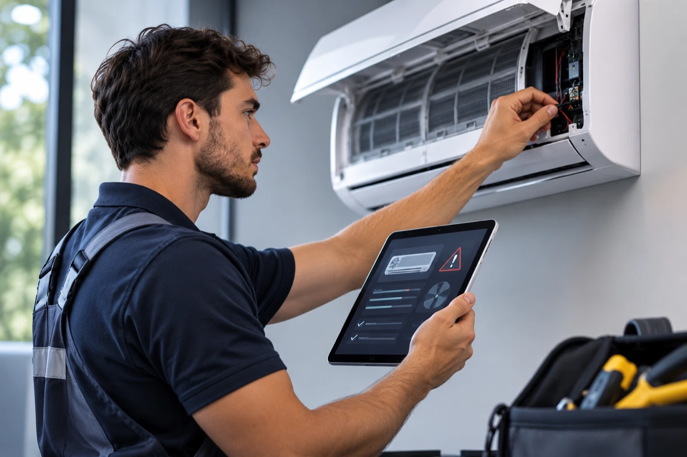

Système mural
8 points- Ne chauffe pas
- Ne climatise pas
- Faible circulation d’air
- Fuite d’eau
- Formation de glace
- Bruits inhabituels
- Télécommande
- Mauvaise performance

Une inspection complète pour identifier la cause d’un problème, et une équipe disponible lorsque c’est urgent.
Un diagnostic professionnel détecte rapidement le problème et évite les réparations coûteuses. Nos techniciens certifiés réalisent une inspection complète de votre système mural ou central, puis recommandent la meilleure solution.
Un diagnostic régulier aide aussi à maintenir une performance optimale et à prolonger la durée de vie de l’appareil.

Une inspection complète, avant que le problème ne s’aggrave.
Réparation d’urgence disponible dans le Grand Montréal.
Vous nous expliquez ce que vous observez.
Le technicien contrôle l’appareil intérieur et extérieur.
Nous localisons précisément l’origine du problème.
Nous vous proposons la meilleure solution, réparation ou autre.
Si le système ne chauffe ou ne climatise plus, fait du bruit, démarre et s’arrête souvent, offre une faible circulation d’air, ou si vos factures d’électricité augmentent.
Le diagnostic identifie la cause du problème. La réparation le corrige, selon la solution retenue avec vous.
Appelez le 438-509-1823. Une réparation d’urgence est disponible.
Oui, les systèmes muraux comme les centraux des maisons avec conduits.

Licence RBQ 5812-9388-01Entrepreneur certifié par la Régie du bâtiment du Québec
Installation et entretien par des professionnels licenciés.
Votre installation est protégée.
Une équipe locale, de la soumission à l’entretien.
Nous vous accompagnons dans les démarches.